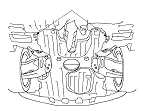

Reboque
|
Se o veículo necessitar de ser rebocado, contacte um serviço de reboque profissional. Nunca reboque o veículo atrás de outro, utilizando uma corda ou uma corrente. É muito perigoso.
Reboque de Emergência
Existem três métodos habituais para rebocar um veículo.
Pronto-socorro com Plataforma -
O operador carrega o veículo na traseira do reboque. Esta é a melhor forma para transportar o veículo.
Para permitir a utilização de um pronto-socorro com plataforma, o veículo está equipado com aberturas (A) para os ganchos de fixação dianteiros, gancho de reboque traseiro (B) e aberturas (C) para os ganchos de fixação traseiros.
O gancho de reboque traseiro pode ser utilizado com um guincho para puxar o veículo para o pronto-socorro e as aberturas para os ganchos de fixação podem ser utilizadas para prender o veículo ao pronto-socorro.
Instalação do Gancho de Reboque Dianteiro
O gancho de reboque amovível é para rebocar o veículo por uma distância muito curta, como por exemplo, para soltar o veículo. O gancho é montado no fixador, no pára-choques dianteiro.

|
Dianteira:

Traseira:

|